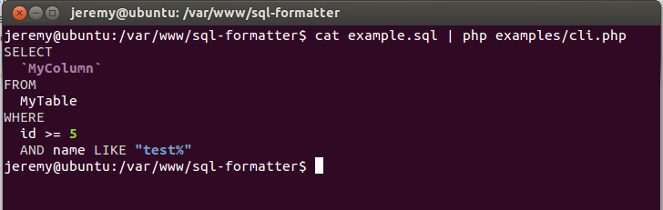

SqlFormatter
A PHP class for formatting and highlighting SQL statements.

Download
If you're using Composer in your project, simply add SqlFormatter to the require section of composer.json
require: {
"jdorn/sql-formatter": "dev-master"
}
Otherwise, Download from Github
and include lib/SqlFormatter.php in your project.
Example Usage
The following example formats and highlights a really complex SQL statement.
<?php
$sql = "SELECT DATE_FORMAT(b.t_create, '%Y-%c-%d') dateID, b.title memo
FROM (SELECT id FROM orc_scheme_detail d WHERE d.business=208
AND d.type IN (29,30,31,321,33,34,3542,361,327,38,39,40,41,42,431,4422,415,4546,47,48,'a',
29,30,31,321,33,34,3542,361,327,38,39,40,41,42,431,4422,415,4546,47,48,'a')
AND d.title IS NOT NULL AND t_create >=
DATE_FORMAT((DATE_SUB(NOW(),INTERVAL 1 DAY)),'%Y-%c-%d') AND t_create
< DATE_FORMAT(NOW(), '%Y-%c-%d') ORDER BY d.id LIMIT 2,10) a,
orc_scheme_detail b WHERE a.id = b.id";
echo SqlFormatter::format($sql);
SELECT DATE_FORMAT(b.t_create, '%Y-%c-%d') dateID, b.title memo FROM ( SELECT id FROM orc_scheme_detail d WHERE d.business = 208 AND d.type IN ( 29, 30, 31, 321, 33, 34, 3542, 361, 327, 38, 39, 40, 41, 42, 431, 4422, 415, 4546, 47, 48, 'a', 29, 30, 31, 321, 33, 34, 3542, 361, 327, 38, 39, 40, 41, 42, 431, 4422, 415, 4546, 47, 48, 'a' ) AND d.title IS NOT NULL AND t_create >= DATE_FORMAT( ( DATE_SUB(NOW(), INTERVAL 1 DAY) ), '%Y-%c-%d' ) AND t_create < DATE_FORMAT(NOW(), '%Y-%c-%d') ORDER BY d.id LIMIT 2, 10 ) a, orc_scheme_detail b WHERE a.id = b.id
Format Only (No Syntax Highlighting)
If you pass false as the 2nd parameter to the format method, it will output formatted plain text.
<?php $sql = "SELECT * FROM MyTable WHERE id = 46"; echo SqlFormatter::format($sql, false);
SELECT * FROM MyTable WHERE id = 46
Syntax Highlighting Only
The highlight method keeps all the original whitespace intact and just adds syntax highlighting.
<?php $sql = "SELECT * FROM MyTable WHERE id = 46"; echo SqlFormatter::highlight($sql);
SELECT * FROM MyTable WHERE id = 46
Compress SQL Query
The compress method compresses whitespace and removes comments.
<?php $sql = "-- This is a comment SELECT /* This is another comment On more than one line */ Id #This is one final comment as temp, DateCreated as Created FROM MyTable;"; echo SqlFormatter::compress($sql);
SELECT Id as temp, DateCreated as Created FROM MyTable;
Remove SQL Comments
The removeComments method removes all comments, but otherwise preserves the original formatting.
<?php $sql = "-- This is a comment SELECT /* This is another comment On more than one line */ Id #This is one final comment as temp, DateCreated as Created FROM MyTable;"; echo SqlFormatter::removeComments($sql);
SELECT Id as temp, DateCreated as Created FROM MyTable;
Split SQL into Individual Queries
The splitQuery method takes a semicolon delimited SQL string and returns an array of the individual queries.
<?php $sql = "DROP TABLE IF EXISTS MyTable; CREATE TABLE MyTable ( id int ); INSERT INTO MyTable (id) VALUES (1),(2),(3),(4); SELECT * FROM MyTable;"; var_export(SqlFormatter::splitQuery($sql));
array ( 0 => 'DROP TABLE IF EXISTS MyTable;', 1 => 'CREATE TABLE MyTable ( id int );', 2 => 'INSERT INTO MyTable (id) VALUES (1),(2),(3),(4);', 3 => 'SELECT * FROM MyTable;' )
Using from the PHP CLI
SqlFormatter will automatically detect when running in CLI mode and will use ASCII shell highlighting instead of HTML.
